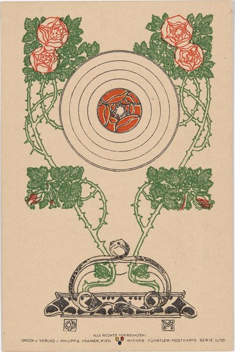
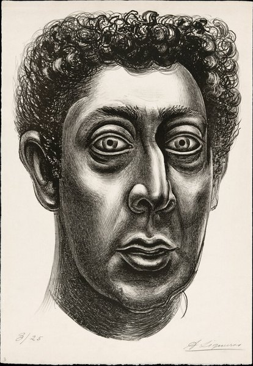

CRVI001496El Lissitzky - Announcer
1923
1923

CRVI001466Unidentified - Nursery interior with a child in a wicker cradle-cart

CRVI001618Pierre Bonnard - Family Scene
1893
1893

CRVI001444Joseph Maria Olbrich - Entwürfe zu Arbeiterhäusern
Plate from Architektur von Olbrich
Plate from Architektur von Olbrich

CRVI001612Alphonse Mucha - Ornament
1901–2
1901–2

CRVI001445Joseph Maria Olbrich - Das Haus Olbrich, Darmstadt
Postcard · Darmstadt artists' colony · 1901
Postcard · Darmstadt artists' colony · 1901

CRVI001443Unidentified - Wiener Künstler-Postkarte
Postcard
Postcard

CRVI001614Alphonse Mucha - Documents Décoratifs: Plate 41
1901–2
1901–2

CRVI001486Kurt Schwitters - Merz 3 Portfolio: Plate 1
1923
1923

CRVI001610Alphonse Mucha - Documents Décoratifs: Sweet Peas
1901–2
1901–2

CRVI001592John Baeder - Red Robin Diner

CRVI001613Alphonse Mucha - Ilsée, Princesse de Tripoli
1897
1897

CRVI000832Seymour Chwast - Cars IV
Lithograph · calendar page · 30 × 48 cm · 1996
Lithograph · calendar page · 30 × 48 cm · 1996

CRVI001441Unidentified - Woman with flowing hair

CRVI001440Josh MacPhee - Huelga

CRVI001072David Rudnick - Artwork for black midi

CRVI001401Marvin Israel - Handiwork, from Graphik USA
Marvin Israel · 1968 · screenprint, one from a portfolio of eight · 1968
Marvin Israel · 1968 · screenprint, one from a portfolio of eight · 1968

CRVI001469Aubrey Beardsley - Isolde
1895
1895

CRVI001497El Lissitzky - New Man
1923
1923

CRVI001495El Lissitzky - Flying to Earth from a Distance
1920
1920

CRVI001411Robert Rauschenberg - Banner (Stoned Moon)
Robert Rauschenberg · 1969 · lithograph, Gemini G.E.L. · 1969
Robert Rauschenberg · 1969 · lithograph, Gemini G.E.L. · 1969

CRVI001057 - Playing cards

CRVI001066David Rudnick - Terrain (front)
Published by It's Nice That
Published by It's Nice That

CRVI001383Harry Bertoia - Untitled
Print by Harry Bertoia · c. 1945 · Whitney Museum of American Art · 1945
Print by Harry Bertoia · c. 1945 · Whitney Museum of American Art · 1945

CRVI001502Gustav Klutsis - Spartakiada Moskau 1928
Postcard · 1928
Postcard · 1928

CRVI001649Pablo Picasso - The Frugal Meal
September 1904, printed 1913
September 1904, printed 1913

CRVI001535David Alfaro Siqueiros - Self-Portrait
1936
1936

CRVI001382Harry Bertoia - Untitled
Print by Harry Bertoia · c. 1943 · Whitney Museum of American Art · 1943
Print by Harry Bertoia · c. 1943 · Whitney Museum of American Art · 1943

CRVI001499Gustav Klutsis - Postcard Commemorating the Russian All-Union Spartakiada
1928
1928

CRVI001067David Rudnick - Terrain (back)
Published by It's Nice That
Published by It's Nice That

CRVI001595Tom Blackwell - Shatzi
1978
1978

CRVI001470Aubrey Beardsley - How La Beale Isoud Wrote to Sir Tristram

CRVI001471Aubrey Beardsley - The Climax
1893
1893

CRVI001632Ernst Ludwig Kirchner - Wehrlin, Facing Front
1924
1924

CRVI001647Pablo Picasso - Head of a Woman: Madeleine
1905, printed 1913
1905, printed 1913

CRVI001439Unidentified - Wall-covering design

CRVI001508Edward Wadsworth - Illustration (Typhoon)
1914–1915
1914–1915